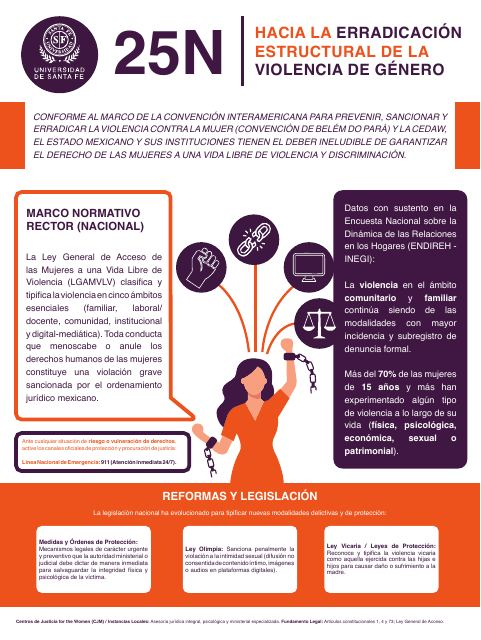
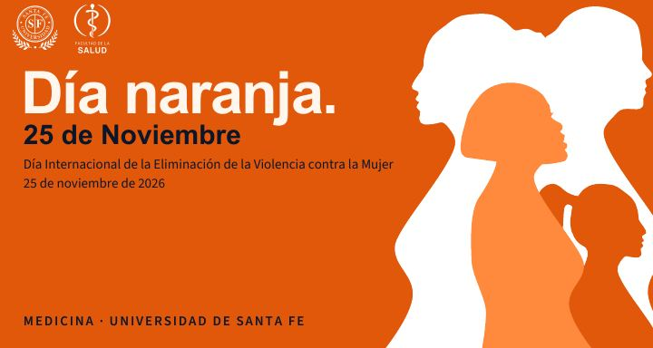

Materiales
Descarga el cartel y la presentación
Los dos archivos están en PDF. Puedes compartirlos con quien quieras.

Presentación «Nombrarla para detenerla»
Descargar presentaciónDónde pedir ayuda
Toca el número para llamar
Si tú o alguien más está en peligro ahora mismo, llama al 911.
Emergencias
Si hay peligro inmediato. Atiende las 24 horas.
911
Línea de las Mujeres
Marca 079 y elige la opción 1. Apoyo psicológico y asesoría legal.
079 · Elige la opción 1.
Instituto Aguascalentense de las Mujeres
Atención psicológica, trabajo social y asesoría jurídica. Lunes a viernes, 8:00 a 16:00.
449 910 21 28
Instituto Aguascalentense de las Mujeres · información general
Dudas sobre servicios y trámites.
449 918 25 50
Si al tocar «Llamar» no se abre tu marcador, usa «Copiar» y pega el número en tu teléfono. Recuerda: nadie tiene que contar lo que vivió si no quiere, y pedir ayuda por otra persona también cuenta.